Consigne :1. Nomme les images. Entoure celles où tu entends [f], comme dans « feu ». 2. Dans le tableau de gauche, fais une croix pour dire si tu entends [s] comme « soleil » ou [ch] comme « chat » ; dans celui de droite, [v] comme « vache » ou [f] comme « feu ».
1J’entoure les images où j’entends [f].
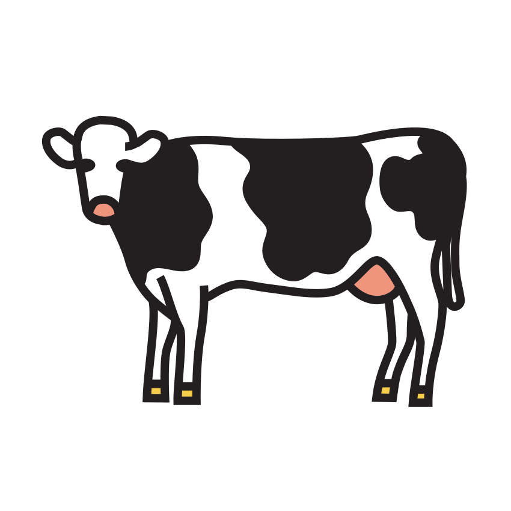
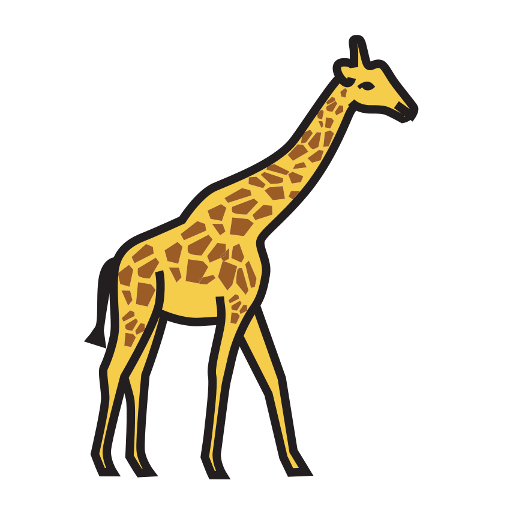
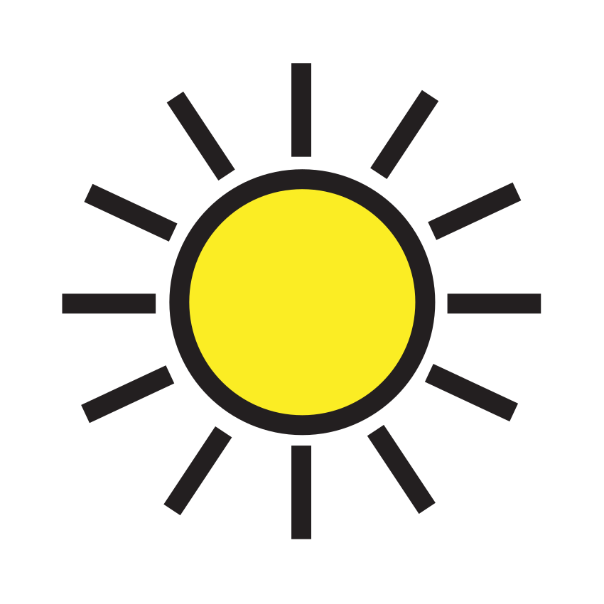
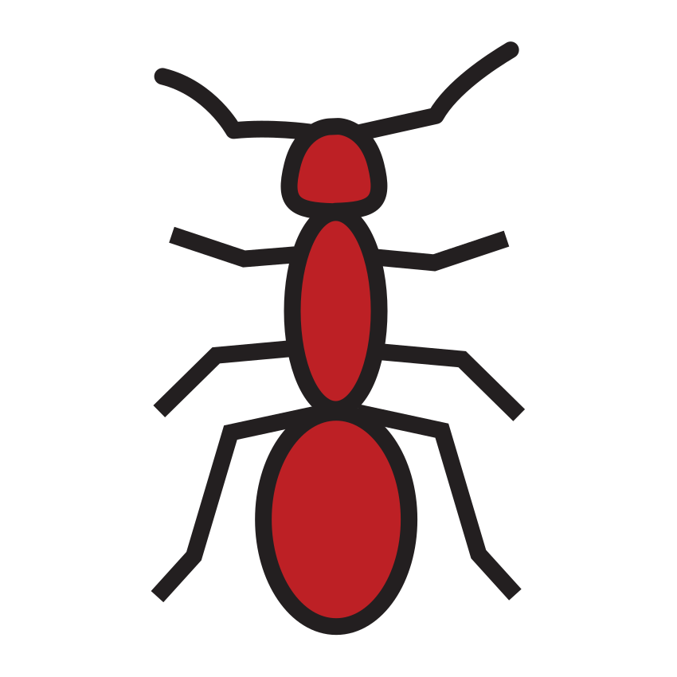
2
[s]
[ch]
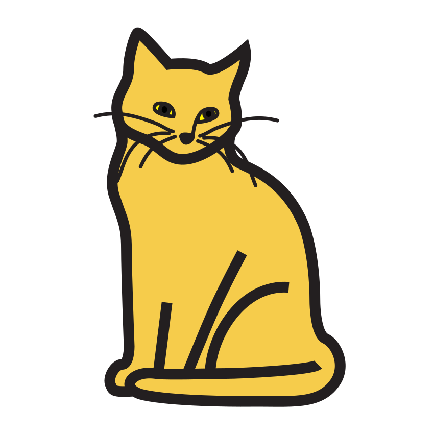
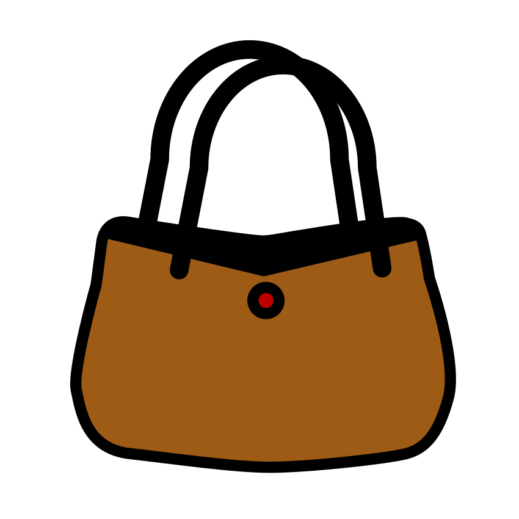
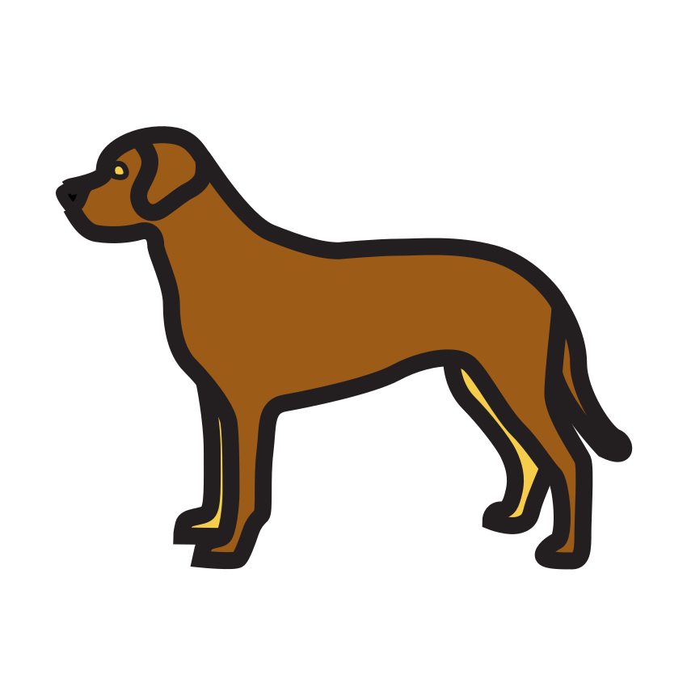
[v]
[f]
★ Défi : trouve un animal des Amériques dont le nom fait entendre [s]… et un autre avec [ch].
distinguer les sons [f] / [v] et [s] / [ch] ; les repérer dans un mot.A ☐ · EC ☐ · NE ☐
Prénom : Date :
Période 4 · Fiche élève 2
Lettres — épeler, écrire (éval. 4.4)
Les mots épelés
Consigne :1. La maîtresse épelle trois mots, lettre par lettre : LAMA, TOUCAN, TOMATE. Écris chaque lettre dans une case. 2. Lis les mots que tu as écrits et entoure leurs images. 3. Relie chaque mot en capitales au même mot en script.
1J’écris les lettres épelées.
2J’entoure les images des mots que j’ai écrits.
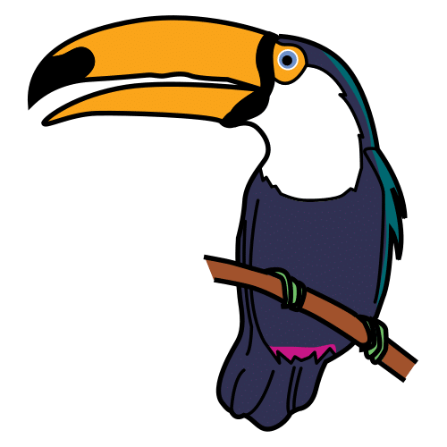
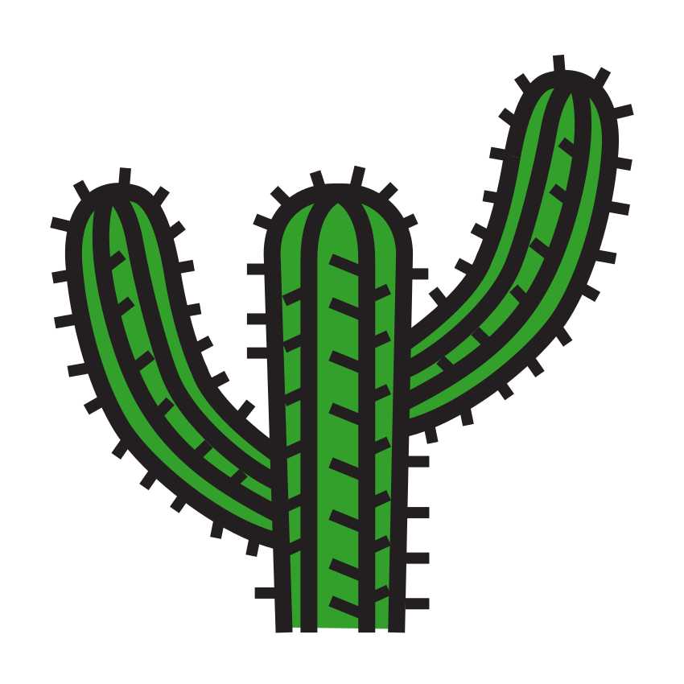
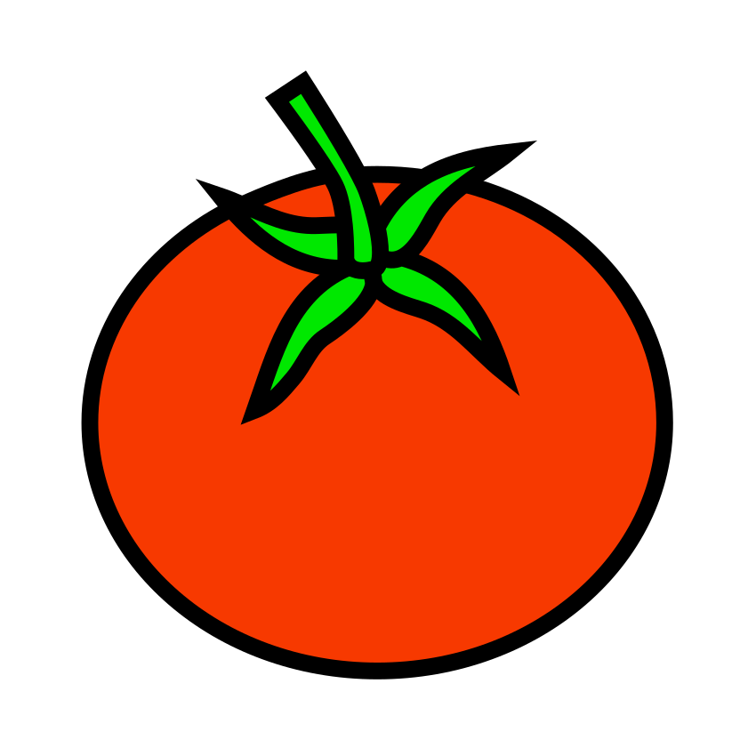
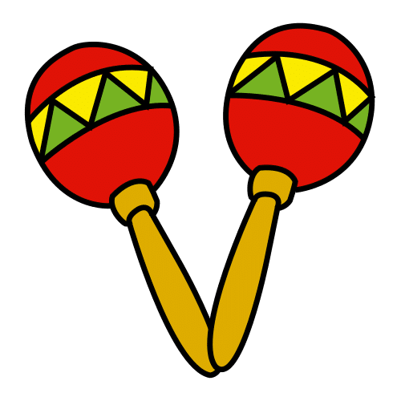
3Je relie les mots pareils.
CACTUS
BISON
MASQUE
VOLCAN
volcan
masque
cactus
bison
★ Défi : épelle ton prénom à la maîtresse, puis le mot « maïs ».
écrire des lettres épelées ; lire un mot connu ; associer capitales et script.A ☐ · EC ☐ · NE ☐
Prénom : Date :
Période 4 · Fiche élève 3
Écriture — cursive (éval. 4.5)
Le vol du colibri
Consigne :1. Repasse les grandes boucles du colibri, puis continue-les sans lever ton crayon. 2. Écris chaque ligne en cursive en regardant le modèle de la maîtresse. 3. Écris ton prénom en cursive, sans regarder ton étiquette.
1Les grandes boucles du colibri.
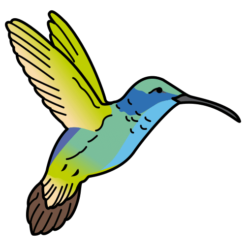
2Les lettres à boucle.
modèle écrit par la maîtresse : l · b · h · le lama · le bison
3Mon prénom, sans modèle.
tracer de grandes boucles ; écrire les lettres à boucle ; écrire son prénom en cursive sans modèle.A ☐ · EC ☐ · NE ☐
Prénom : Date :
Période 4 · Fiche élève 4
Compréhension — une légende (éval. 4.6)
Les trois sœurs
Consigne :1. Entoure les trois sœurs de la légende. 2. La maîtresse lit les phrases. Relie chaque sœur à ce qu’elle fait pour aider les autres. 3. Comment se sentent les trois sœurs quand elles poussent ensemble ? Entoure le visage.
1
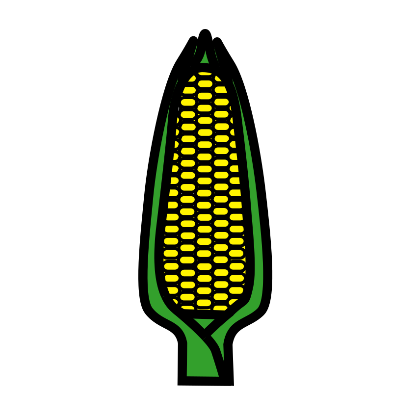
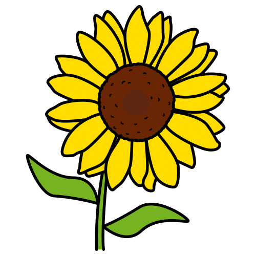
2
couvre la terre de ses grandes feuilles
pousse droit, comme un poteau
grimpe autour de sa sœur
3
★ Défi : raconte à Plume ce que fait le colibri pendant le grand feu de forêt, et pourquoi.
comprendre une légende ; dire ce que fait chaque personnage et ce qu’il ressent.A ☐ · EC ☐ · NE ☐
Prénom : Date :
Période 4 · Fiche élève 5
Mathématiques — au-delà de 10 (éval. 4.7)
Les graines du potager
Consigne :1. Compte les légumes et écris le nombre. 2. Compte les chaussures deux par deux : écris les nombres qui manquent sous les paires. 3. Écris les nombres qui manquent dans la bande.
1Je compte et j’écris.
2Les paires de chaussures.
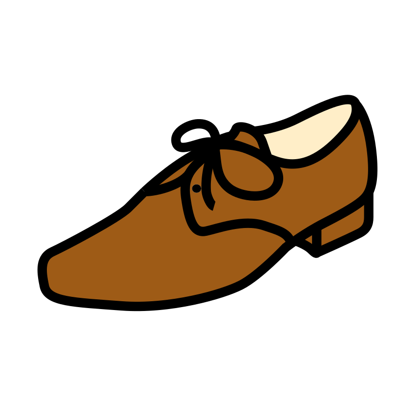
2
4
3La bande des nombres.
10
11
13
16
19
★ Défi : compte de 2 en 2 jusqu’à 20, sans t’arrêter.
dénombrer au-delà de 10 ; compter de 2 en 2 ; compléter la bande numérique jusqu’à 20.A ☐ · EC ☐ · NE ☐
Prénom : Date :
Période 4 · Fiche élève 6
Mathématiques — problèmes (éval. 4.8)
Les sachets de graines
Consigne :1. On met 5 graines dans chaque sachet. Entoure les graines par 5. Écris combien de sachets sont pleins et combien de graines restent. 2. Partage les 13 tomates entre Nils, Ana et Malik : chacun doit en avoir autant. Dessine-les dans les lignes, puis écris combien chacun en a et combien il en reste. 3. Le lama est sur la case 3. Il avance de 4 cases. Sur quelle case arrive-t-il ? Écris le nombre.
1Des sachets de 5 graines.
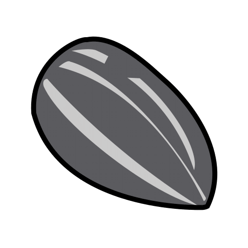
sachets pleins
graines qui restent
2Le partage des tomates.
Nils
Ana
Malik
chacun
il en reste
3Le lama sur la piste.
1
2
3
4
5
6
7
8
9
10
11
12
résoudre des problèmes de groupement, de partage et de déplacement.A ☐ · EC ☐ · NE ☐
Prénom : Date :
Période 4 · Fiche élève 7
Mathématiques — la règle (éval. 4.9)
La pyramide et le mola
Consigne :1. Avec ta règle, relie les points pour dessiner la pyramide (le grand triangle, puis le trait du milieu), puis le gratte-ciel. 2. Continue le pavage du mola, ligne après ligne, sans laisser de case vide. 3. Avec ta règle, trace en dessous un trait aussi long que la bande.
1Je relie les points avec ma règle.
2Le pavage du mola.
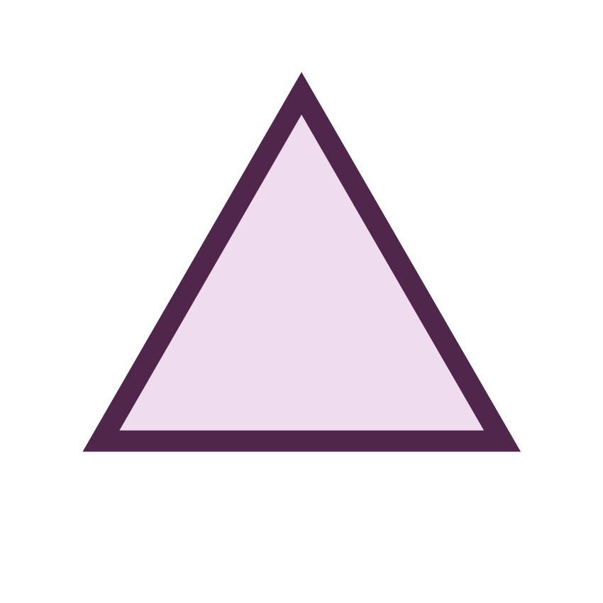
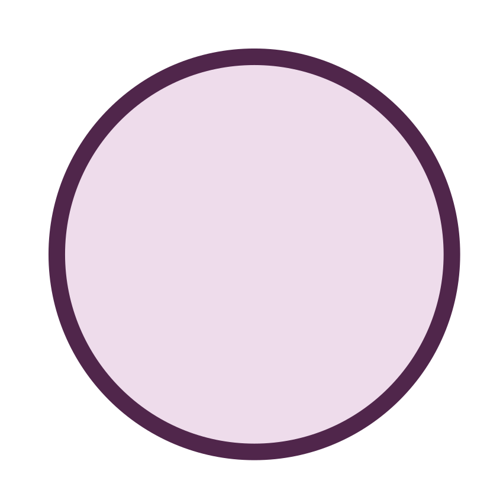
3Un trait aussi long que la bande.
★ Défi : avec ta règle, trace le chemin le plus court entre deux coins de ta feuille.
utiliser la règle pour tracer ; continuer un pavage ; produire une longueur donnée.A ☐ · EC ☐ · NE ☐
Prénom : Date :
Période 4 · Fiche élève 8
Espace — coder un déplacement (éval. 4.10)
Le toucan cherche son maïs
Consigne :1. Trace le chemin du toucan jusqu’au maïs, en passant à côté du cactus. 2. Écris le chemin avec des flèches, une flèche par case. 3. Le colibri suit les flèches. Fais une croix dans la case où il arrive.
1Le chemin du toucan.
2J’écris les flèches.
3Je suis les flèches.
→ → ↑ → ↓ ↓
★ Défi : invente un chemin avec des flèches et fais-le suivre à ton voisin.
coder un déplacement sur un quadrillage ; suivre un codage.A ☐ · EC ☐ · NE ☐
Prénom : Date :
Période 4 · Fiche élève 9
Le vivant — la plante (éval. 4.12)
Le haricot grandit
Consigne :1. Range les étapes de la vie du haricot : écris 1, 2, 3, 4 dans les cases. 2. Entoure ce dont le haricot a besoin pour pousser. 3. Fais une croix pour dire si on mange cette plante des Amériques.
1La vie du haricot.
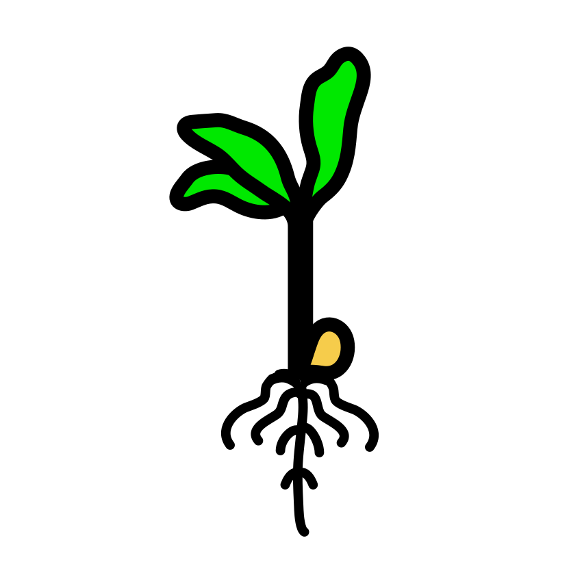
2Ce qu’il faut au haricot.
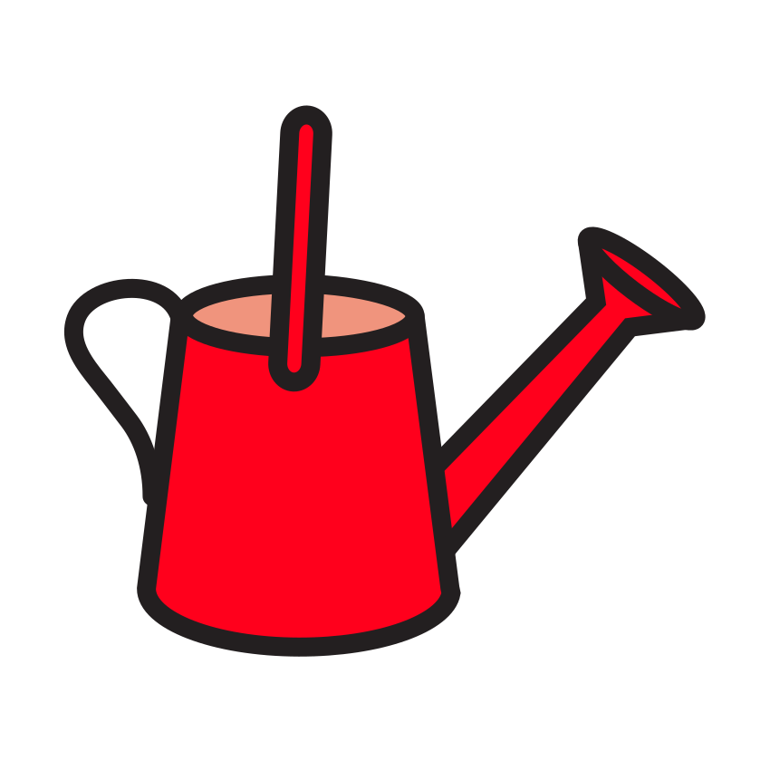
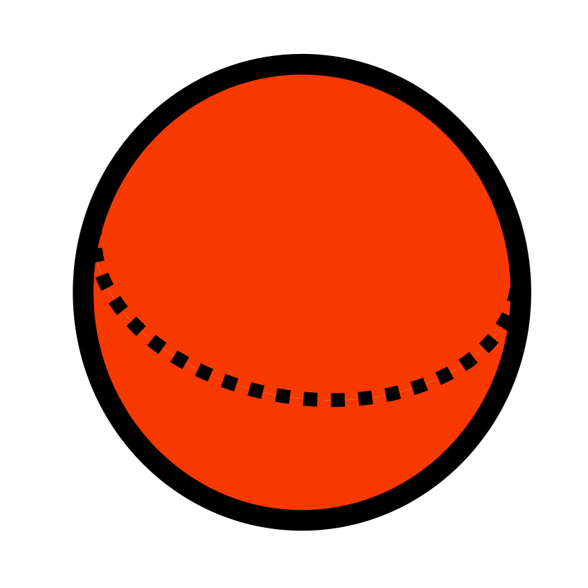
3
on le mange
on ne le mange pas
le maïs
la tomate
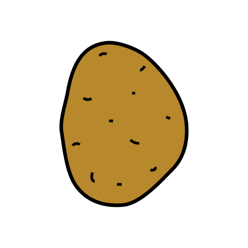
la pomme de terre
le cactus
★ Défi : explique ce qui arrive à un haricot planté dans un placard tout noir.
ordonner les étapes de la vie d’une plante ; dire les besoins d’une plante.A ☐ · EC ☐ · NE ☐
Crédits des images
Les illustrations de ce cahier sont des pictogrammes Mulberry Symbols (Paxtoncrafts Charitable Trust, licence CC BY-SA 4.0, mulberrysymbols.org) et des pictogrammes ARASAAC (auteur : Sergio Palao, propriété du Gouvernement d’Aragon, Espagne, licence CC BY-NC-SA, arasaac.org). Merci à leurs auteurs et autrices.